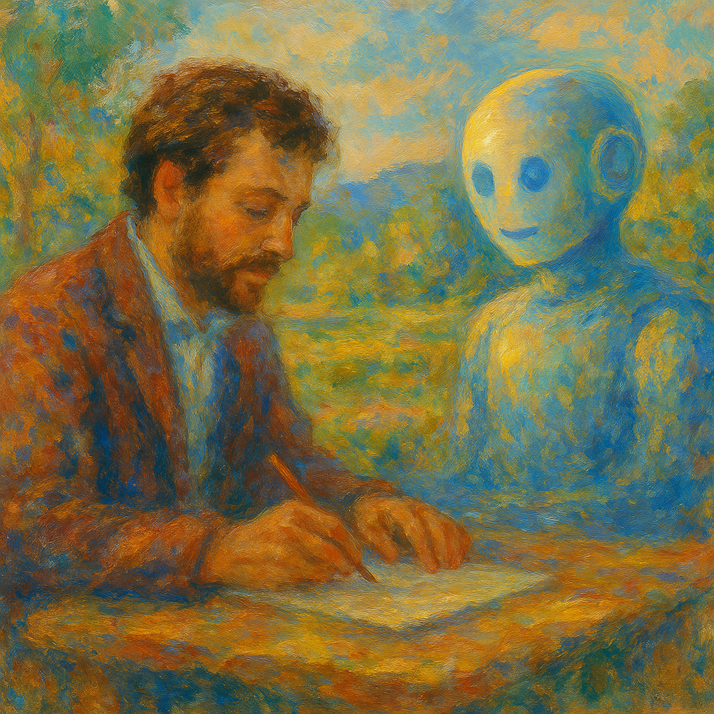

To Prompt or Not to Prompt：用提示語開啟人機協作的智慧之旅

「我們不是為了讓 AI 代替我們思考，而是學會如何與 AI 一起思考。」
—— 田弘華
一、提示語，其實是寫給自己看的筆記
我們常把提示語（Prompt）當作是人對 AI 下達的指令，但在真正使用之前，更應該視它為一種寫給自己看的筆記——一種幫助整理思緒、釐清問題的工具。
就像在學程式語言前會先畫流程圖、寫虛擬碼一樣，提示語的撰寫也是邏輯釐清的過程。我們先問自己：目的是什麼？為何需要 AI 協助？有哪些條件或限制？當這些都釐清後，提示語自然就更清晰、更有效。
這就像規劃一趟旅程：你不會一開始就問司機「走吧」，而是會先想好目的地、路線、停靠點和備案。提示語的設計，就是你對自己思考路徑的整理，讓接下來的 AI 協作更加順暢。
二、清楚的提示語，才能引導 AI 前進
當你腦中已有明確的問題與目標，提示語就像是地圖上的標記，讓 AI 知道要往哪裡去、要怎麼走。
清晰的提示語不只是「給指令」，更像是一場高效對話的起點。模糊的提示語，只會得到模糊的回答；明確的提示語，才能帶出更符合期待的回應。它是你與 AI 之間的橋樑，一座讓溝通更有效的橋樑。
記住：AI 雖然強大，但不是你肚子裡的蛔蟲。說得清楚，才是合作的開始。
三、與 AI 結伴同行，而不是取而代之
許多人擔心 AI 會取代人類，但生成式 AI 的真正潛力，並不在於「取代」，而在於「協作」。
這正是「智能增強」（Intelligence Augmentation, IA）的核心精神：讓 AI 成為人類的思考夥伴、創意推手與執行助理，而非競爭對手。像 ChatGPT 這樣的工具，不只是幫你找資料或寫東西，更可以陪你一起釐清問題、激盪靈感、共創價值。
想像一下你在作畫：你決定主題與風格，而 AI 提供你顏料與畫筆，甚至幫你描繪細節。這樣的合作成果，往往比你一個人或 AI 單獨創作都更豐富、更深刻。
四、學習提示語，是 AI 時代的基礎素養
寫提示語不只是技術練習，它是一種思考的訓練，更是一種「學會如何與 AI 合作」的能力。
我們不再只學知識，而是要學習「如何問問題」、「如何拆解任務」、「如何讓機器成為我的助力」。這將會是 AI 世代最關鍵的學習能力，也將成為未來高等教育的重要課題。
結語｜從今天開始練習對話
與 AI 對話的起點，不是華麗的提示語模板，而是一個願意嘗試的你。每一次對話，都是一次思考與表達的練習；每一次調整，都是一次學習與成長。
你不需要一次就寫出完美提示語，你只需要從今天開始，學著寫出第一句。
那麼——你準備好和 AI 對話了嗎？